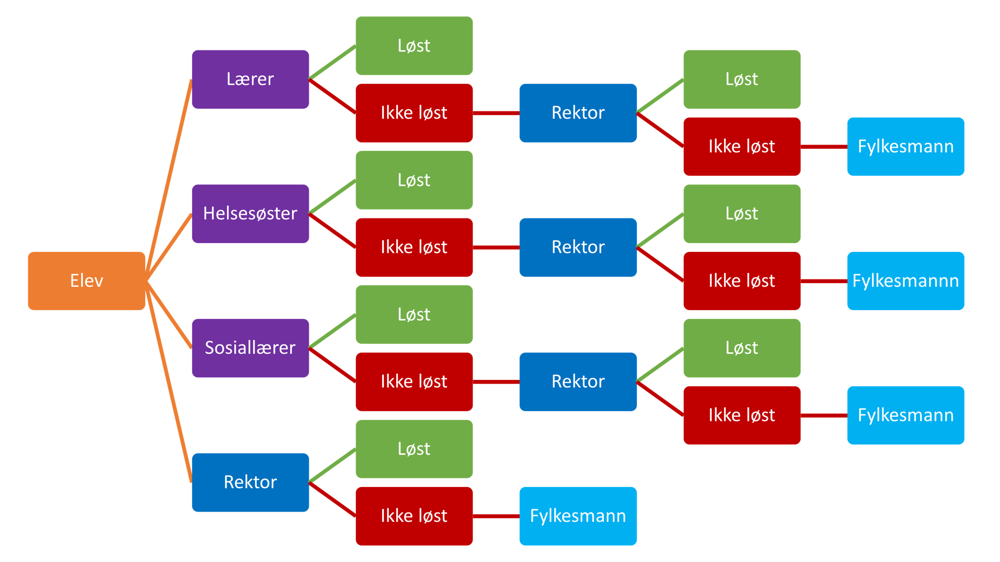

Vår løsning er en todelt, en app og et datasystem. Appen skal gi barn en lett måte å si ifra til ansvarlige om mobbing. Systemet skal føre statistikk over varsler og passe på at hvis det ikke blir gjort noe med varsler, så blir personer lenger opp i skolesystemet varslet om dette. Denne løsningen dekker både vanskeligheten ved å varsle og sikrer at varslene ikke blir ignorert eller feilbehandlet.
Løsningen vår relaterer til problemet vi har identifisert ved å gi offeret en mulighet ved bruk av teknologi (app) til å si ifra om mobbingen.
Appen skal la elever varsle om mobbing til de som er i posisjon til å ta tak i mobbingen og hjelpe eleven. Appen skal videre holde eleven oppdatert på statusen på varslet og kunne ta imot beskjeder fra den som har ansvaret for saken. Eleven vil ha mulighet til å si ifra om den er fornøyd eller ikke med hvordan varselet ble behandlet. Appen skal også inneholde informasjon om mobbing, hvordan man kan få hjelp og informasjon om appen til foresatte. Appen vil være satt opp på forskjellig måte basert på eleven som skal bruke de. For de yngre vil det være symboler og lyd, mens for de eldre vil det være hovedsakelig tekst.
Datasystemet vil koordinere appene og føre statistikk på varslene. Det vil sende varselet til de ansvarlige og vil også varsle personer lenger opp i skolesystemet i visse tilfeller. Systemet vil reagere forskjellig basert på antall varsler, alvorlighetsgraden, om det har blitt gjort noe og elevens reaksjon på løsningen. Med kun et varsel med lav alvorlighetsgrad vil f.eks bare kontaktlærer og sosiallærer bli varslet, men i et tilfelle med flere varsler med høy alvorlighetsgrad vil også rektor og utdanningsetaten bli varslet.
Løsningen vår er en tilgjengelig app som er åpen for alle i skolealder til å si ifra om mobbingen offeret opplever, og videreføre denne beskjeden til de som er i posisjon som ansvarlige handlende i systemet som skal ta tak i problemet og hjelpe offeret. Hvis ikke dette blir tatt tak i skal appen gi beskjed til neste person(ledd) i systemet, slik at offerets beskjed om mobbing ikke skal bli ignorert. Offeret skal også få beskjed om at h*n har blitt hørt og problemet skal håndteres. Appen skal også gi mer informasjon om hvordan man kan håndtere mobbing og guidelines til hvordan man kan få hjelp. Det skal også være en egen infoside til foreldre.